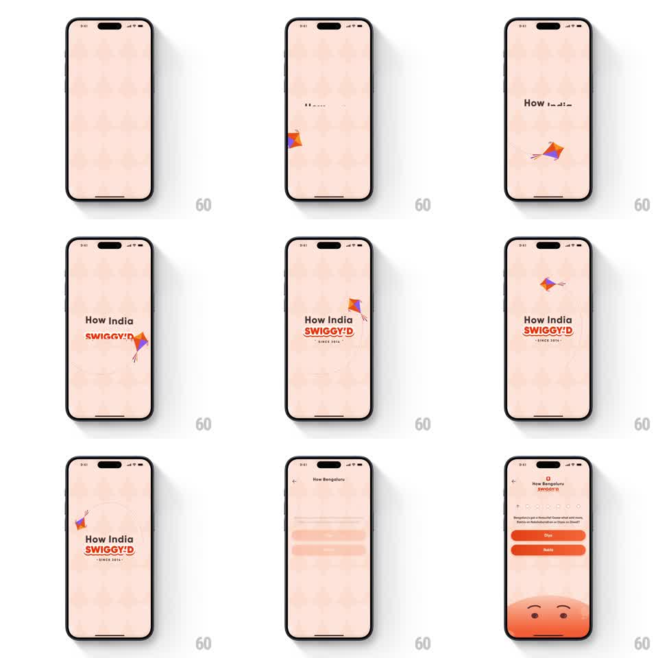

Media
Frame-by-frame

Rebuild this animation 1:1: Swiggy's "How India Swiggy'd" splash - on a quiet peach screen a colorful kite swoops through, the title assembles around it, and the scene crossfades into the first recap quiz.

Rebuild this animation 1:1: Swiggy's "How India Swiggy'd" splash - on a quiet peach screen a colorful kite swoops through, the title assembles around it, and the scene crossfades into the first recap quiz.
## Integration
Integration: stack-agnostic spec - springs given as stiffness/damping, timed motions as duration + curve; map every value to your framework and animation library of choice.
## Scene
A soft peach splash with a subtle food-doodle texture. A small diamond kite (orange, purple, red panels with a tail) flies across. The title builds: "How India" in dark, "SWIGGY'D" in red with the Swiggy bolt, "- SINCE 2014 -" beneath. The kite orbits the logo, then the splash gives way to the first quiz screen ("How Bengaluru SWIGGY'D" with answer buttons and the round mascot face rising from the bottom).
## Motion spec
Pattern: kite flythrough with title assembly, ~3s.
- The kite enters from the left edge on a gentle arc (800ms, ease-in-out), tail fluttering behind it.
- "How India" types or wipes in (300ms), then "SWIGGY'D" pops in with the bolt (scale 0.9 to 1, spring stiffness 380 damping 16), the kite circling once around the finished logo (700ms, elliptical loop).
- "- SINCE 2014 -" fades in under the logo (250ms).
- The splash crossfades into the quiz screen (400ms): question, answer buttons, and the mascot face rising from the bottom edge (spring stiffness 300 damping 20).
## Calibration
- The kite never stops moving until the transition - its motion is the thread between splash and quiz.
- The title locks up center-left of the kite's loop, not centered on screen.
## Reduced motion
Kite flies a single pass; title fades in; crossfade to quiz.
## Don't miss
- The kite tail is a string of small bows, waving with the flight path.
- The mascot face arrives only with the quiz screen - it is not part of the splash.